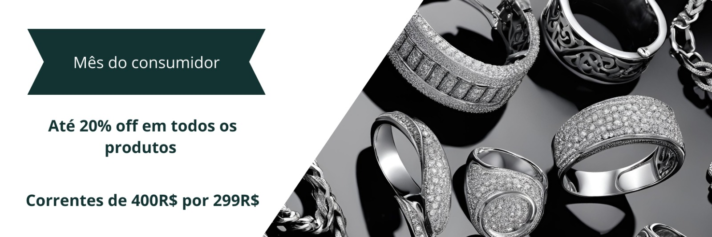

A Fiora Joias é o destino ideal para aqueles que buscam uma elegância refinada e uma sofisticação única em peças exclusivas de prata. Em nossa joalheria, cada criação é uma verdadeira obra de arte, feita para capturar a beleza e a essência da prata, transformando-a em joias que encantam e impressionam.
Nosso compromisso com a excelência é evidente em cada detalhe de nossas peças. Desde anéis sofisticados e colares deslumbrantes até brincos marcantes, cada item é projetado com um cuidado meticuloso, resultando em criações que não apenas brilham, mas também têm uma história para contar. Na Fiori, a prata é mais do que um metal precioso; é uma tela sobre a qual desenhamos elegância e estilo.
A qualidade é um dos pilares da nossa marca. Trabalhamos exclusivamente com prata de alta qualidade, garantindo que cada peça não apenas mantenha seu brilho e beleza, mas também resista ao teste do tempo. Nossas joias são criadas para serem atemporais, mantendo seu charme e sua integridade por muitos anos. Cada design reflete uma fusão harmoniosa entre o clássico e o contemporâneo, oferecendo peças que se destacam tanto em ocasiões especiais quanto no dia a dia.
Na Fiori Joias, entendemos que cada cliente é único e que a escolha de uma joia deve ser uma experiência pessoal e especial. É por isso que nosso atendimento é altamente personalizado, com uma equipe dedicada a ajudar você a encontrar a peça perfeita que ressoe com sua própria essência e estilo. Seja na nossa loja física ou online, estamos aqui para oferecer uma experiência de compra memorável e satisfatória.
Joias – Onde a Prata Encontra a Perfeição e a Elegância se Torna Realidade..